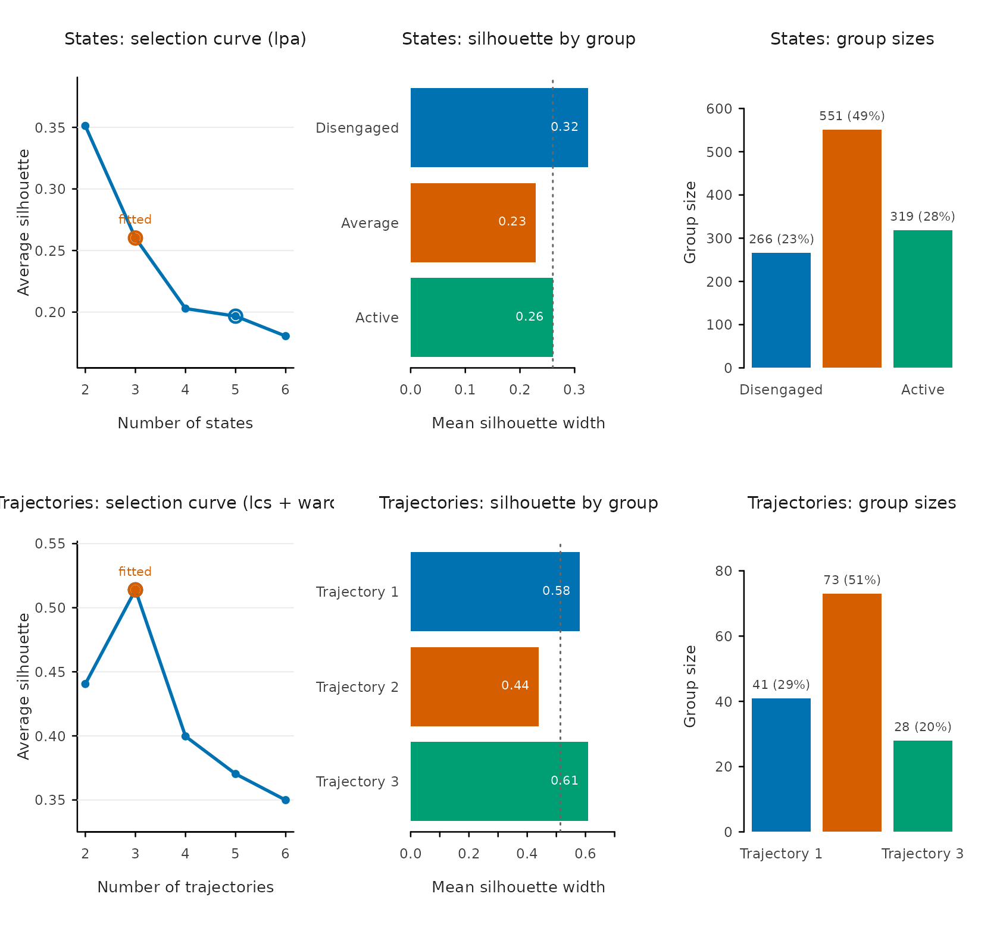
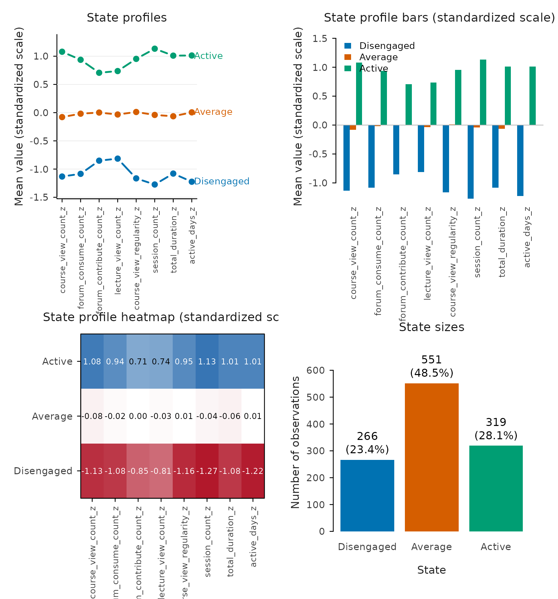
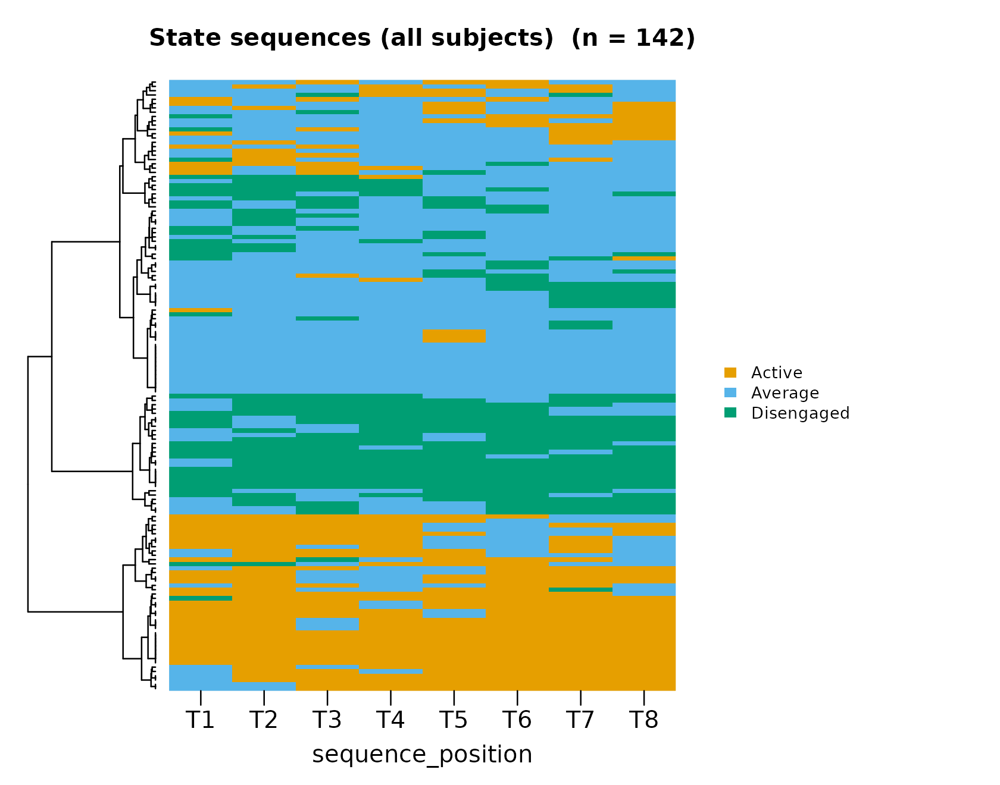
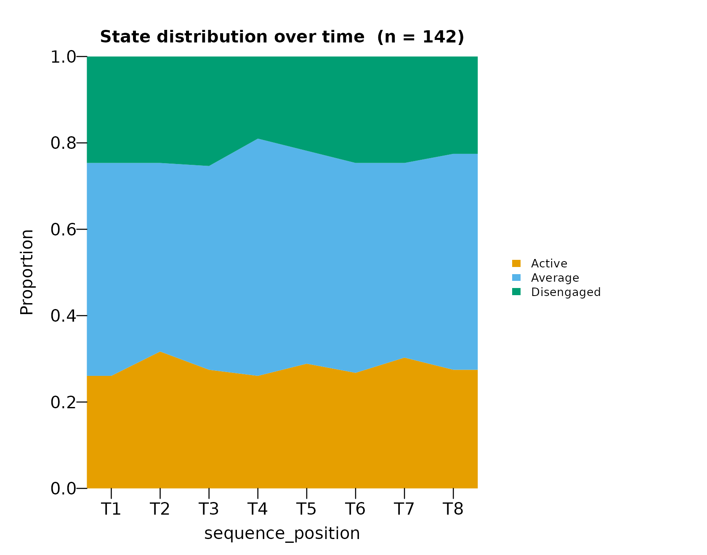
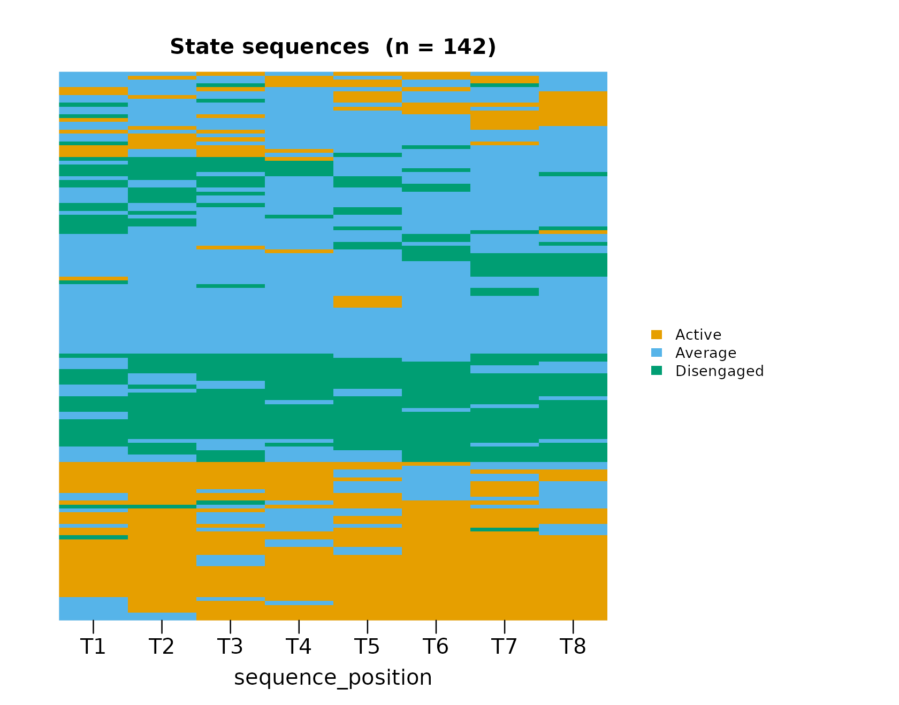
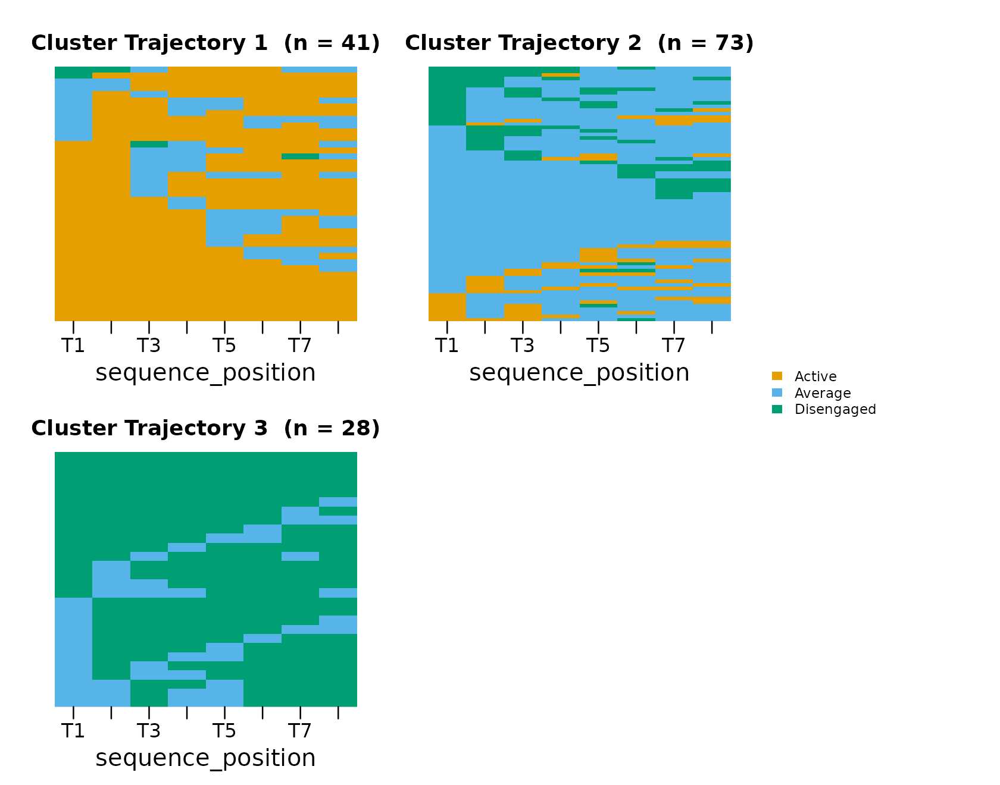
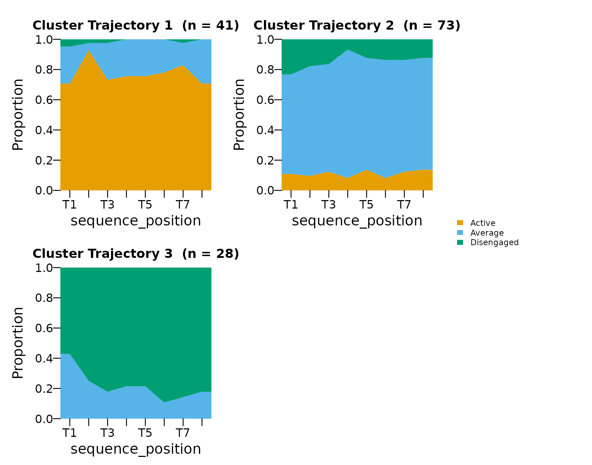
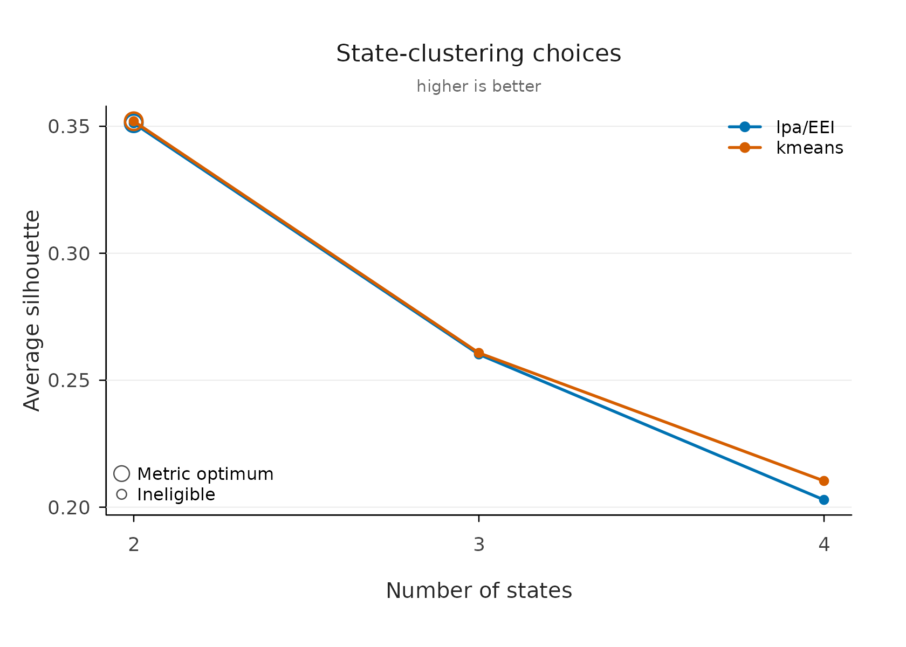

VaSStra Tutorial: Variables, States, Sequences, Trajectories
Source:vignettes/vasstra-tutorial.Rmd
vasstra-tutorial.RmdLongitudinal engagement data have a structural problem: eight indicators per student per course are too many dimensions to compare students on, and averaging them across time destroys exactly the thing that matters — how each student changes. The VaSSTra method solves this in three compressions. Multivariate observations become a small set of interpretable states; each student’s states, ordered in time, become a sequence; and students whose sequences resemble each other become trajectories — a person-centered summary of change that a single regression coefficient cannot express.
This tutorial runs the complete workflow on the longitudinal engagement data from the VaSSTra chapter of Learning Analytics Methods and Tutorials, in this order:
- The complete analysis in one call.
- Choosing and defending the number of states.
- Understanding what the states are.
- Sequences: how states unfold over time.
- Trajectories: groups of similar journeys.
- Describing what the trajectories mean.
- Naming groups after inspecting them.
- Full control: explicit steps and grid comparisons.
| Task | Verb |
|---|---|
| Complete analysis | vasstra() |
| Compare cluster counts |
evaluate(), plot()
|
| Fit statistics | fit_indices() |
| Rename groups | set_labels() |
| Tidy results |
as.data.frame(), summary()
|
| Individual steps |
step1_states() … step4_describe()
|
| Explicit grids |
state_choices(), trajectory_choices()
|
1. The complete analysis in one call
The engagement data ship analysis-ready: 142 students at
eight course positions, with eight course-standardized indicators and
attached role metadata, so no column plumbing is needed. The chapter’s
substantive decision — three latent profiles named Disengaged, Average,
and Active — is expressed entirely by the labels: three labels mean
three states, estimated by latent profile analysis (mclust
"EEI", the chapter’s tidyLPA Model 1) because that is the
default state method. The LCS distance with Ward clustering follows the
chapter’s trajectory analysis.
library(VaSStra)
data("engagement", package = "VaSStra")
fit <- vasstra(
engagement,
state_labels = c("Disengaged", "Average", "Active"),
dissimilarity = "lcs",
cluster_method = "ward.D2",
positive_states = "Active",
negative_states = "Disengaged"
)
#> Using n_states = 3 to match the supplied labels.
#> Selected n_trajectories = 3 (lcs + ward.D2, silhouette = 0.514); see `diagnostics$selection`.
fit
#> VaSStra Analysis
#> 142 subjects | 8 times | 3 states | 3 trajectories
#> lcs + ward.D2 | silhouette 0.514The one remaining automated decision — the number of trajectories —
is reported in the message and stored with its full comparison table in
the fit, so it can be defended later rather than taken on faith. Leaving
the labels out too (vasstra(engagement)) automates the
state count as well; automation never selects a solution whose smallest
group holds under five percent of observations, the conventional
threshold below which latent classes are treated as spurious.
2. Choosing and defending the number of states
A fitted clustering is a claim, and the claim needs two kinds of
evidence: that the chosen count beats its neighbors, and that the chosen
solution is internally sound. evaluate() provides both in
one object — a candidate table across counts and a per-group quality
table for the fitted solution.
evaluation <- evaluate(fit)
evaluation
#> VaSStra clustering evaluation: states (lpa)
#> Fitted: 3 states | silhouette 0.260
#> Candidates:
#> n_states method lpa_model silhouette bic aic classification_entropy
#> 2 lpa EEI 0.351 21679.00 21553.12 0.903
#> 3 lpa EEI 0.260 20120.13 19948.93 0.894
#> 4 lpa EEI 0.203 19362.24 19145.73 0.893
#> 5 lpa EEI 0.197 19008.96 18747.13 0.871
#> 6 lpa EEI 0.181 18600.79 18293.64 0.887
#> min_size max_size size_ratio eligible best fitted
#> 509 627 1.232 TRUE FALSE FALSE
#> 266 551 2.071 TRUE FALSE TRUE
#> 152 414 2.724 TRUE FALSE FALSE
#> 155 367 2.368 TRUE TRUE FALSE
#> 33 350 10.606 FALSE FALSE FALSE
#> Fitted states:
#> state n proportion silhouette
#> Disengaged 266 0.234 0.325
#> Average 551 0.485 0.229
#> Active 319 0.281 0.261
#>
#> VaSStra clustering evaluation: trajectories (lcs + ward.D2)
#> Fitted: 3 trajectories | silhouette 0.514
#> Candidates:
#> n_trajectories dissimilarity method silhouette mean_within_distance min_size
#> 2 lcs ward.D2 0.440 6.353 41
#> 3 lcs ward.D2 0.514 4.541 28
#> 4 lcs ward.D2 0.400 4.172 28
#> 5 lcs ward.D2 0.370 3.918 8
#> 6 lcs ward.D2 0.350 3.595 8
#> max_size size_ratio eligible best fitted
#> 101 2.463 TRUE FALSE FALSE
#> 73 2.607 TRUE TRUE TRUE
#> 43 1.536 TRUE FALSE FALSE
#> 43 5.375 TRUE FALSE FALSE
#> 43 5.375 TRUE FALSE FALSE
#> Fitted trajectories:
#> trajectory n proportion mean_within_distance silhouette
#> Trajectory 1 41 0.289 4.259 0.581
#> Trajectory 2 73 0.514 4.961 0.440
#> Trajectory 3 28 0.197 3.857 0.609
plot(evaluation)
The two rows of panels answer different questions. The trajectory selection curve peaks at the fitted three groups (silhouette 0.51 against 0.44 and 0.40 for two and four), so the automated choice is also the local optimum — the strongest position a selection can be in. The state curve instead declines from two: with LPA the count was fixed by the three labels, and the panel makes the cost of that substantive choice visible (0.26 at three against 0.35 at two) instead of hiding it. The silhouette-by-group bars then locate where cohesion comes from: the middle trajectory is the most compact (0.56), while the smallest one (0.36) is the first place to look when judging whether three groups over-merge distinct journeys.
For the model-based evidence reviewers expect,
fit_indices() returns the complete information-criterion
family as one tidy row — the same content as tidyLPA’s fit table, plus
the classification-quality columns that usually have to be assembled by
hand.
fit_indices(fit)
#> VaSStra fit indices: states (lpa)
#> n_states method lpa_model log_likelihood n_parameters aic bic
#> 3 lpa EEI -9940.47 34 19948.93 20120.13
#> sabic caic awe clc kic icl entropy prob_min
#> 20012.14 20154.13 20461.33 20144.89 19985.93 20384.09 0.894 0.945
#> prob_max silhouette min_size max_size size_ratio
#> 0.956 0.26 266 551 2.07Three of these numbers carry the interpretation. Entropy (0.89) says
the posterior classification is sharp overall; prob_min
(0.94) says even the worst class assigns its members with high
confidence — entropy summarizes the whole matrix, prob_min
guards its weakest class, and reporting both prevents a good average
from hiding a bad class. The criterion family (AIC through ICL) is there
for the comparison table:
fit_indices(fit, compare = TRUE)
#> VaSStra fit indices: states (lpa)
#> n_states method lpa_model log_likelihood n_parameters aic bic
#> 2 lpa EEI -10751.56 25 21553.12 21679.00
#> 3 lpa EEI -9940.47 34 19948.93 20120.13
#> 4 lpa EEI -9529.86 43 19145.73 19362.25
#> 5 lpa EEI -9321.57 52 18747.13 19008.96
#> 6 lpa EEI -9085.82 61 18293.64 18600.79
#> sabic caic awe clc kic icl entropy prob_min
#> 21599.59 21704.00 21929.88 21655.20 21581.12 21831.08 0.903 0.973
#> 20012.14 20154.13 20461.33 20144.89 19985.93 20384.09 0.894 0.945
#> 19225.66 19405.25 19793.76 19397.81 19191.73 19700.33 0.893 0.928
#> 18843.80 19060.96 19530.80 19113.95 18802.13 19479.79 0.871 0.873
#> 18407.04 18661.79 19212.95 18633.20 18357.64 19062.35 0.887 0.876
#> prob_max silhouette min_size max_size size_ratio eligible best fitted
#> 0.975 0.351 509 627 1.23 TRUE FALSE FALSE
#> 0.956 0.260 266 551 2.07 TRUE FALSE TRUE
#> 0.969 0.203 152 414 2.72 TRUE FALSE FALSE
#> 0.964 0.197 155 367 2.37 TRUE TRUE FALSE
#> 0.973 0.181 33 350 10.61 FALSE FALSE FALSEEvery criterion keeps falling through six classes — a nearly linear
decline with no elbow — which is precisely why the chapter’s three
profiles rest on interpretability and the classification-quality columns
rather than on a BIC minimum. The table makes that argument honest: the
best flag marks what pure criteria would pick,
fitted marks what was chosen, and the two need not
agree.
3. Understanding what the states are
The states are only useful if they can be named, and naming requires knowing how the profiles differ. The overview draws the four state views together; each answers one question.
plot(fit, which = "states", type = "all")
The profile lines answer what makes each state itself: Active sits around one standard deviation above course average on every indicator, Disengaged about one below, Average on the line — engagement here is a level, not a trade-off between, say, forum and lecture activity, which is exactly what justifies ordered labels. The bars carry the same means but grouped by indicator, which is the view for spotting whether any single indicator breaks the ordering (none does). The heatmap adds the exact magnitudes the lines only sketch — Disengaged is most extreme on session count (−1.23) and least on lecture views (−0.85). The sizes panel grounds prevalence: Average is the plurality (45%), and no state is rare enough to question.
4. Sequences: how states unfold over time
The default sequence view is the heatmap: every aligned sequence as one row, rows ordered by similarity, so persistence shows as long unbroken bands and instability as speckle — the one view that keeps all 142 individual journeys visible at once.
plot(fit, which = "sequences")
Two further views split the temporal question the heatmap compresses. The distribution answers the aggregate question — does the composition of the cohort drift over the eight positions — while the index plot answers the individual one on a fixed subject order. The distinction matters because a flat distribution can hide heavy individual churn.
plot(fit, which = "sequences", type = "distribution")
plot(fit, which = "sequences", type = "index")
5. Trajectories: groups of similar journeys
Grouping the sequences (LCS distance, Ward linkage) yields three trajectories of 41, 73, and 28 students. The grouped index plot is the core evidence that the groups mean something: one group is dominated by Active rows throughout, one by Disengaged, and the largest mixes Average with excursions — visibly different journeys, not arbitrary partitions of similar ones.
plot(fit, type = "index")
plot(fit, type = "distribution")
6. Describing what the trajectories mean
The per-trajectory summary turns those pictures into numbers, one row per trajectory.
as.data.frame(fit, unit = "trajectory")
#> trajectory n proportion mean_within_distance n_observed unique_states
#> 1 Trajectory 1 41 0.2887324 4.258537 8 1.878049
#> 2 Trajectory 2 73 0.5140845 4.961187 8 1.986301
#> 3 Trajectory 3 28 0.1971831 3.857143 8 1.821429
#> transitions entropy complexity volatility integrative_potential
#> 1 1.829268 0.4189906 0.3251220 0.4436702 0.7696477
#> 2 2.328767 0.4736884 0.3865300 0.4973907 0.1149163
#> 3 1.892857 0.3978570 0.3246998 0.4387755 0.0000000
#> negative_exposure
#> 1 0.009485095
#> 2 0.131659056
#> 3 0.820436508The two time-weighted columns exist because
positive_states and negative_states were
declared in the fit: integrative potential is the late-weighted share of
time in Active, negative exposure the same for Disengaged. Here they
separate the groups almost completely (0.77 versus 0.11 versus 0.00 for
integrative potential) — later time points count more, so these indices
read as where the student is heading, which raw state
proportions cannot say. Entropy and transition counts add the stability
dimension: the large middle group is not only mixed in state but also
the most mobile.
Per-student indices for downstream modeling — one row per student with trajectory membership, entropy, complexity, and both exposure indices — come from the same fit:
head(as.data.frame(fit))
#> user_id trajectory n_observed unique_states transitions entropy
#> 1 D2C5F64E Trajectory 1 8 3 3 0.9850568
#> 2 D7E3D0DC Trajectory 1 8 3 4 0.8194484
#> 3 2926CF64 Trajectory 3 8 1 0 0.0000000
#> 4 985AFF35 Trajectory 3 8 2 2 0.6021808
#> 5 F89100C7 Trajectory 1 8 3 4 0.8868595
#> 6 AB944042 Trajectory 3 8 2 2 0.3429510
#> complexity volatility integrative_potential negative_exposure
#> 1 0.6497440 0.7142857 0.4166667 0.08333333
#> 2 0.6842925 0.7857143 0.5833333 0.08333333
#> 3 0.0000000 0.1666667 0.0000000 1.00000000
#> 4 0.4147911 0.4761905 0.0000000 0.55555556
#> 5 0.7118826 0.7857143 0.3888889 0.19444444
#> 6 0.3130271 0.4761905 0.0000000 0.888888897. Naming groups after inspecting them
Interpretation happens after fitting, so labels should be
assignable afterward without refitting. set_labels()
renames in place — every table, sequence, and recorded positive/negative
state follows, and no fitted value changes. Full vectors rename
everything; named renames change only what they name.
fit <- set_labels(
fit,
trajectories = c("Mostly active", "Mostly average", "Mostly disengaged")
)
summary(fit)
#> trajectory n proportion mean_within_distance n_observed unique_states
#> 1 Mostly active 41 0.2887324 4.258537 8 1.878049
#> 2 Mostly average 73 0.5140845 4.961187 8 1.986301
#> 3 Mostly disengaged 28 0.1971831 3.857143 8 1.821429
#> transitions entropy complexity volatility integrative_potential
#> 1 1.829268 0.4189906 0.3251220 0.4436702 0.7696477
#> 2 2.328767 0.4736884 0.3865300 0.4973907 0.1149163
#> 3 1.892857 0.3978570 0.3246998 0.4387755 0.0000000
#> negative_exposure
#> 1 0.009485095
#> 2 0.131659056
#> 3 0.8204365088. Full control: explicit steps and grid comparisons
Everything above is also four explicit steps, each with the same
automated defaults — the route to take when intermediate objects are
needed, when states come from another method (enter at
step2_sequences() with a state column), or when the method
itself is under comparison:
states <- step1_states(engagement, n_states = 3)
sequences <- step2_sequences(states)
trajectories <- step3_trajectories(sequences, dissimilarity = "lcs",
method = "ward.D2")
description <- step4_describe(trajectories, positive_states = "Active",
negative_states = "Disengaged")When the clustering method is itself in question,
state_choices() and trajectory_choices() fit
the full grid and return one tidy row per candidate — nothing is
selected silently, recommendations are marked within each method
(silhouette for hard clustering, BIC for LPA, since model-based criteria
only compare within LPA), and the inspected candidate is fitted by
describing it:
state_options <- state_choices(engagement, n_states = 2:4,
method = c("lpa", "kmeans"))
state_options
#> VaSStra state choices
#> 6 candidates | 6 successful | 2 recommended
#> candidate_id n_states method lpa_model recommendation_criterion silhouette
#> 3 4 lpa EEI bic 0.2028840
#> 4 2 kmeans <NA> silhouette 0.3519794
#> bic min_size eligible
#> 19362.25 152 TRUE
#> NA 519 TRUE
plot(state_options, metric = "silhouette")
states <- fit_state_choice(state_options, n_states = 3, method = "lpa",
labels = c("Disengaged", "Average", "Active"))The choice plot and evaluate() show the same silhouette
on the same scale, so the method comparison here and the count
comparison there compose into one argument. Method overview and formal
background: the VaSSTra
chapter.